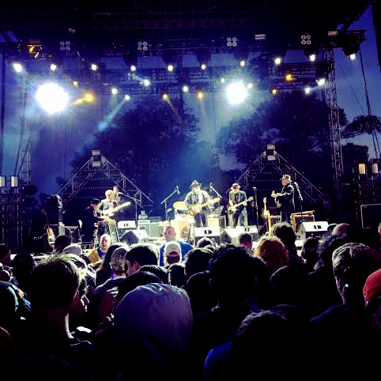
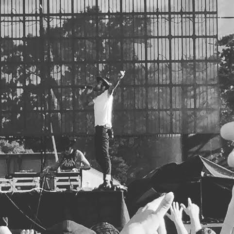

My weekend at Riot Fest began Saturday afternoon. Douglas Park was a muddy field, big crowds; I was high as a kite, and full of chicken fingers. I did not realize I would be seeing country music icon, Merle Haggard, funk icon, Bootsy Collins, and metal icons, System of a Down, perform. Senior citizens Merle Haggard and Bootsy Collins were full of life. System of a Down was amazing, but they had to stop performing twice due to crowd safety. The muddy grounds made for an adventure as a concert goer, but my nice pair of Nike Air Maxes were destroyed Saturday evening.

Bootsy Collins performed a deep set of funk Saturday evening. The band had a full brass and bass sound. Bootsy Collins bass style has influenced bass players of all genres over the last 40 years. Bootsy performed “Not Just Knee Deep,” and the song was a crowd pleaser. De La Soul, who was also performing at the fest this year, sampled “Not Just Knee Deep” for their hit “Me, Myself, and I.” Bootsy jumped in the crowd with the assistance of security to show the Chicago fans love.
Merle Haggard spent his early years in and out of prison. In 2015, he found himself as one of the headlining acts at Riot Fest 2015. Merle Haggard and the Strangers delivered a soulful set of classic country music. The band had a diverse sound with saxophone, fiddle, and slide guitar. The band was an older group of musicians with a high level of musicality. Merle performed his classic “Okie” from Muskogee. The best part of seeing Bootsy Collins and Merle Haggard was the appreciation everyone in the diverse crowd had for them; that was amazing to see.

The air was filled with anticipation for System of a Down, so much so that there was a dangerous situation from the muddy ground and moshing in the pit. If someone would’ve fallen, they would’ve been trampled to death. At this point, I decided to make my escape by body surfing my way out. After feeling like I was going to die, I went and ate a hot dog. The comfort of eating a hot dog made me forget about the dangerous situation, and I made my way towards the back of the crowd and System of a Down stopped performing because two people were hurt in the middle of the pit. It took about ten minutes to get these people out of the pit. System of a Down had a great set, but it was overshadowed by the lack of safety and security.
After the craziest Saturday evening of my life, I returned Sunday afternoon for more shenanigans. The bass was bumping from the Roots stage where there was a lineup of great reggae acts. The day included Morgan Heritage and Stephen Marley. Morgan Heritage brought a message of love, peace, and happiness. The band performed a nice midday set filled with rhythm and passion. They were an unexpected surprise in my day. Stephen Marley followed Morgan Heritage, and he really channeled the energy of his father, performing covers and originals. Marley performed “Buffalo Soldier” to the enjoyment of the crowd. Stephen looks very comfortable continuing the legacy his father left.
The smell of sewage was very powerful all day. As my musical odyssey continued, the hip-hop acts really rounded out the weekend for me. Hip-hop legends De La Soul, Shady Records’ Yelawolf, and legends of the West Coast, Cypress Hill performed to Chicago hip-hop heads. De La Soul has been a part of hip-hop for over 25 years with great successes and failures. De La Soul performed “Much More,” as the DJ began playing the LTD song “Love Ballad,” the sample used by producer J Dilla. De La Soul used a lot of crowd interaction to get the midday crowd pumped up, and the Riot Fest crowd really appreciated their performance.

Shady Records was represented at Riot Fest by Alabama bred, Yelawolf. He was accompanied by an electric guitar player, Bones Owens, and his DJ, DJ Klever. Being from the South, and the current state, he had some strong words about racism. He said he “grew up on Lynard Skynard and Dukes of Hazzard, not the KKK.” That’s very refreshing to hear from an artist like Yelawolf. Hip-hop was created by African Americans, but it has room for everybody. His stage presence was so high, he broke a microphone stand, sending it into the screaming crowd, and threw a monitor on the stage. Needless to say, he was very excited to be in Chicago. I had never listened to his music, before but he gained a new fan that day.
The weekend was full of funk, Reggae, Hip-hop, country and rock n’ roll acts. As the sun went down on the last day of Riot Fest, I ate my shitty five dollar slice of pizza and listened to Cypress Hill perform “Superstar,” my worries faded into the distance.
Go to previous page
contributing writer: daniel martinez